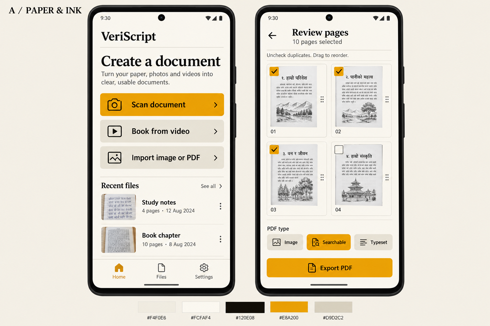

SELECTED LIGHT MODE
Open full image ↗Paper & Ink
Warm paper, dark ink, and amber actions.

background
#F4F0E6surface
#FCFAF4text
#120E08primary
#E8A200secondary surface
#D9D2C2Corners: 8dp · Primary button text: #120E08